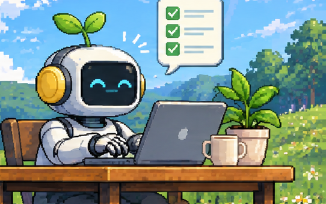

HOW IT WORKS
Answer once. Walk away.
Come back to proof.
STEP 1
Answer once
Dark mode on every screen, or just settings?
Every screen (Recommended)
Just settings
Claude thinks the whole task through and asks everything upfront. Usually 0–2 clicks.
▶
STEP 2
Walk away

It works alone. A build check blocks fake "done", and a fresh-eyes reviewer tries to break it.
▶
STEP 3
Come back to proof
- 1.
 Dark mode on all screens
Dark mode on all screens - 2.
 Chart colors guessed
Chart colors guessed - 3.
 Ship it?
Ship it?  settings-dark.png
settings-dark.png
A 5-second summary with a screenshot. Type /grass:why 2 for the reasoning.
EVERY ICON = AN ACTION
decide glance
 read look
skip
read look
skip skip
skip
decide glance
read look
skip skip
 Auto mode skipped (not asked for)
Auto mode skipped (not asked for)